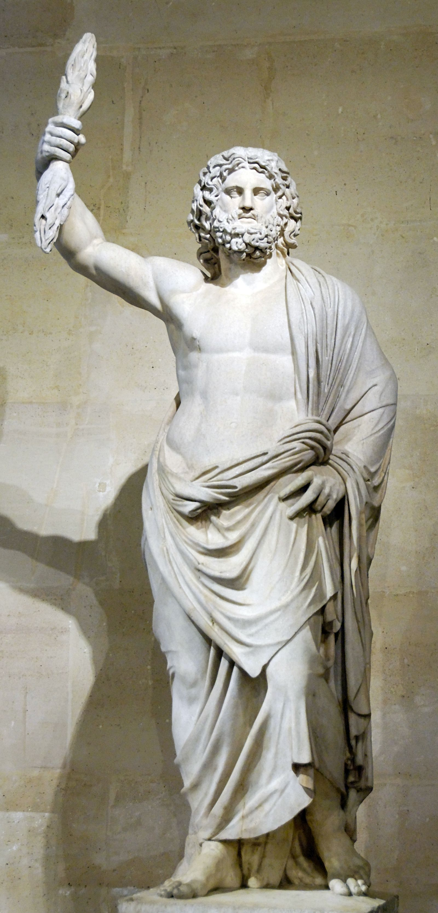

King of the Olympians, Lord of the Sky, Father of Gods and Men

The Zeus of Smyrna, Roman marble, 2nd century CE, found at Smyrna in 1680 — Musée du Louvre, Paris (Ma 13)
Zeus is the god of sky, storm and sovereignty: the third and final king of the cosmos, and the first to hold the throne without being overthrown. Youngest child of Cronus and Rhea, the only one not swallowed at birth, he is the guarantor of the whole Olympian order: of oaths, of kings, of guests and suppliants, of the boundaries that make civilised life possible. He is not all-powerful. He can be tricked, resisted and outmanoeuvred, and the Fates bind him as they bind everything. What makes him king is not omnipotence but legitimacy: he won his throne through alliance rather than terror, shared the world with his brothers, and turned raw power into law. The Greeks did not need him to be good. They needed him to be lawful, and the difference between those two ideas is where almost every Zeus story lives.
The MythsCronus, warned that a child of his would depose him, swallowed each of his children at birth. Rhea hid her sixth in a cave on Cretan Mount Ida and gave her husband a swaddled stone instead. Zeus grew to adulthood in hiding, returned, forced his father to vomit up his siblings, freed the Cyclopes (who forged the thunderbolt in gratitude) and led the ten-year war against the Titans. The full story runs through The Age of the Titans and The Titanomachy. Its shape matters as much as its events: Zeus wins by freeing prisoners, building coalitions and dividing the spoils, three things his father and grandfather were incapable of doing.
Hesiod's Theogony makes Zeus's first wife Metis, whose name means cunning wisdom. Warned by Gaia and Uranus that her second child would be a son destined to depose him, Zeus swallowed Metis whole while she was pregnant with the first. It is his father's crime, repeated with a crucial difference: Cronus swallowed his children and lost everything; Zeus swallowed wisdom itself and made it part of him. The child, Athena, was born from his own head, fully armed, and became his most loyal ally. The prophesied son was never conceived. In the Greek imagination this is why Zeus's reign is final: the king who contains counsel cannot be surprised.
After the Titans fell, Gaia bore one final child by Tartarus: Typhon, a storm-giant with a hundred serpent heads, the most terrible being the earth ever produced. In Hesiod he is dispatched with the thunderbolt in a battle that sets the world on fire. Later tradition (Apollodorus) makes it a nearer thing: Typhon cuts the sinews from Zeus's limbs and imprisons him, helpless, until Hermes steals the sinews back and restores him. Zeus buries the monster under Mount Etna, where he smoulders still. It is the last succession crisis, and the storm god's final victory over the storm itself.
The Titan Prometheus, who had fought beside Zeus, tricked him at Mecone over the division of sacrifice and then stole fire for mankind against the king's explicit will. Zeus's response was the eagle and the ever-regrowing liver, and, for humanity, Pandora. The conflict is the great test case of Zeus's justice: defensible as law (a boundary was crossed), disturbing as cruelty (the punishment is exquisite and eternal). Aeschylus built an entire tragedy on the discomfort, and the discomfort is the point.
Zeus's affairs are a catalogue of transformation: a bull for Europa, a swan for Leda, golden rain for Danaë, and for Io, whom he turned into a heifer to hide from Hera, the disguise became a torment. The pattern produces most of the next mythological generation: Apollo and Artemis by Leto, Hermes by Maia, Dionysus by the mortal Semele, Persephone by Demeter, the Muses by Mnemosyne, and heroes from Perseus to Heracles. These stories will get their own linked set of pages; read as a group, they are less about desire than about sovereignty distributing itself, the sky father seeding every lineage that matters, and every one of them paid for by someone other than Zeus.
Epithets and DomainsThe enthroned king of the gods. His sanctuary at Olympia held Phidias's colossal gold and ivory statue, one of the seven wonders of the ancient world.
Protector of hospitality, the sacred bond between host and guest. To wrong a guest was to wrong Zeus directly; the Trojan War is, formally, his case against Paris.
Witness and enforcer of sworn words. At Olympia, athletes swore on Zeus Horkios before competing.
The weapon as presence: spots struck by lightning were fenced off and consecrated to him, places no foot might enter.
Invoked in crisis, and honoured with the third libation at banquets: wine poured to Zeus the Saviour closed the drinking ritual.
The household protector whose altar stood in the courtyard of a Greek home. Citizenship examinations at Athens asked where your Zeus Herkeios stood.
Guardian of household property and provisions, honoured in the pantry and, strikingly, represented as a snake, or as a sealed jar filled with a mixture called panspermia, all-seeds.
The chthonic Zeus: a purifying underworld aspect shown as a great bearded serpent, honoured at the Athenian festival of Diasia with offerings burned whole, nothing shared. The king of the bright sky has a face turned towards the dead, and the Greeks kept the two carefully distinct in rite.
The archaic wolf-Zeus of Arcadia, whose mountaintop ash altar and disturbing sacrificial rumours (Pausanias declines to give details) preserve the oldest and darkest stratum of his cult.
Pausanias records the title at Delphi and Olympia. It is a theological claim as much as an epithet: the king does not command the Moirai, but he walks at their head.
Zeus is the fullest Greek image of what Jungian psychology calls the King archetype: the organising centre that establishes realm, allocates territory, and holds order against chaos. Jean Shinoda Bolen's Gods in Everyman treats him as the first of the father gods: the man whose native element is power and perspective, who sees from above as the eagle sees, who builds alliances, distributes portfolios and thinks in dynasties. Where Hermes consciousness lives at the boundary, Zeus consciousness lives at the summit: it wants oversight, decision rights and succession secured.
The light expression is the good king, and it is genuinely rare. It establishes order that others can flourish inside; it delegates whole kingdoms (the sea to Poseidon, the underworld to Hades) without needing to run them; it keeps its word absolutely, because it understands that the king's oath is the currency the whole realm trades on; it protects the weak precisely where they are weakest, at thresholds, as strangers, as suppliants. And it integrates wisdom rather than merely consulting it: the swallowing of Metis, read psychologically, is the king internalising counsel so completely that thinking and ruling become one act.
The shadow is the tyrant father, and Greek myth is unsparing about it. It seduces and abandons, and someone else always pays (Io wanders tormented; Semele burns; Hera's rage lands on the mistresses and the children, almost never on Zeus). It fears its own succession: the dynasty of Uranus, Cronus and Zeus is three generations of fathers attacking their children rather than be surpassed, and Zeus only escapes the pattern by a swallow's width. It mistakes distance for perspective, becoming the father who rules the household and knows nothing about anyone in it. And it punishes disproportionately when its authority is questioned, as Prometheus discovered. The shadow king's tell is the confusion of self with realm: any challenge to the man is treated as an attack on the order itself.
In Modern LifeZeus is the archetype of executive power, and his carriers are easiest to find at the top of things: founders, chief executives, senior partners, patriarchs and matriarchs of family firms, empire-builders of every scale. The Zeus pattern wants a realm, and until it has one it is restless in a way that can look like ambition and feel, from inside, like destiny.
At their best, Zeus leaders are extraordinary delegators. The tell is comfort with strong subordinates: a genuine Zeus hands Poseidon the entire ocean and never checks his tides, appoints capable rulers to whole territories and judges them on outcomes. They think in decades, hold commitments publicly and absolutely, and create the stability under which other people take risks. In coaching terms this is the leader whose word is infrastructure.
The shadow shows up in three reliable places. Succession: the founder who cannot let the successor grow, undermines every heir apparent, and calls it maintaining standards (the Cronus pattern, one generation on). Distance: the leader who knows the numbers of every department and the name of no one's child, whose family gets the eagle's view and none of the warmth. And entitlement: the quiet conviction that the rules the king enforces do not apply to the king, which is how organisations acquire their scandals. The developmental work is almost always the same: coming down the mountain, letting particular people matter more than the realm for an hour at a time, and making peace with being surpassed, which is the one thing the mythological Zeus never had to do.
CorrespondencesJupiter. The Greeks knew the planet as the star of Zeus; the identification is ancient and secure.
Thursday (Latin dies Iovis). From the Hellenistic planetary week, late antiquity: astrological convention rather than classical cult practice.
Sky blue, white, gold. Modern convention: no colour is securely attested for him in ancient cult, though gold and ivory were the materials of his greatest cult statue.
The thunderbolt, the eagle, the sceptre, the throne, the aegis (the storm-shield he shares with Athena), the oak.
The eagle above all (his messenger and standard in art), the bull (the Europa myth and sacrificial practice), the wolf (the archaic Lykaios cult), the snake (his household and chthonic aspects, Ktesios and Meilichios).
The oak, securely his: the oracle at Dodona spoke through the rustling of a sacred oak. The wild olive crowned Olympic victors at his games. Beyond these two, plant lists are modern convention.
Wine libations (the third cup at banquets belonged to Zeus Soter), incense, cakes; white or light-coloured animals were the classical sacrifice for the sky aspect, offerings burned whole for Meilichios. For modern practice, the sky/chthonic distinction is the detail worth preserving: the ancients never mixed the two rites.
The Olympic Games, held in his honour every four years at Olympia. The Diasia at Athens, for Zeus Meilichios, which Thucydides calls the greatest Athenian festival of Zeus. The Bouphonia, the strange Athenian ox-sacrifice for Zeus Polieus in which the axe was afterwards put on trial for murder.
Olympia (the games and the Phidias statue); Dodona in Epirus (his oracle, the oldest in Greece); Mount Lykaion in Arcadia (the ash altar); Nemea (the Nemean Games); the Olympieion at Athens.
No securely attested monthly day, unlike Hermes' fourth; claims of a specific day for Zeus in modern calendars are convention.
For divination: Dodona is his oracle, and it worked by sound rather than speech. The priestesses (the Peleiades, "doves") and the barefoot priests called the Selloi interpreted the rustling of the sacred oak's leaves, and enquirers scratched their questions onto strips of lead, thousands of which survive: "Shall I marry?", "Was the blanket stolen?", "To which god should I sacrifice for good fortune?" The mightiest god in the pantheon answered in the smallest voice available, wind in leaves, and the humility of the surviving questions is a lesson in itself.
Metis (swallowed), Themis, and Hera, his sister-wife and queen. Among many lovers: Leto, Maia, Demeter, Mnemosyne, Semele, Europa, Leda, Danaë
Athena (from his head), Apollo and Artemis, Hermes, Ares, Dionysus, Persephone, the Muses, the Horai and the Moirai (by Themis), and mortal heroes from Perseus to Heracles
Cronus and the Titans; Typhon, the last challenger; Prometheus, ally turned convict; Hera, wife and permanent opposition
Zeus's siblings, freed from Cronus's stomach, are Hestia, Demeter, Hera, Hades and Poseidon. With the three brothers drawing lots for the cosmos, the world took its final shape: sky, sea and underworld, with the earth and Olympus held in common. That story, and the reign it began, starts in The Titanomachy.